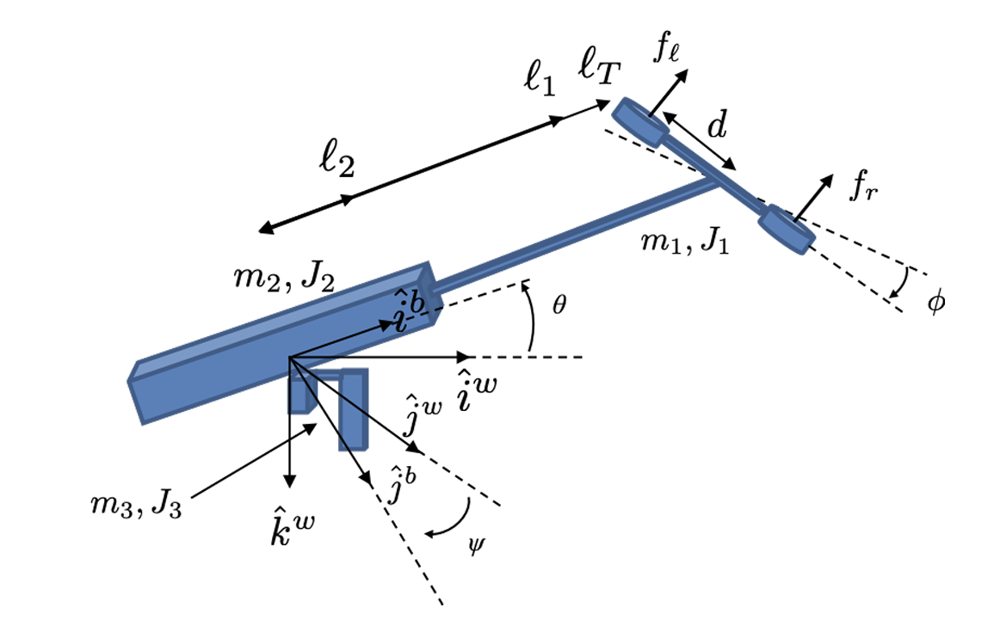
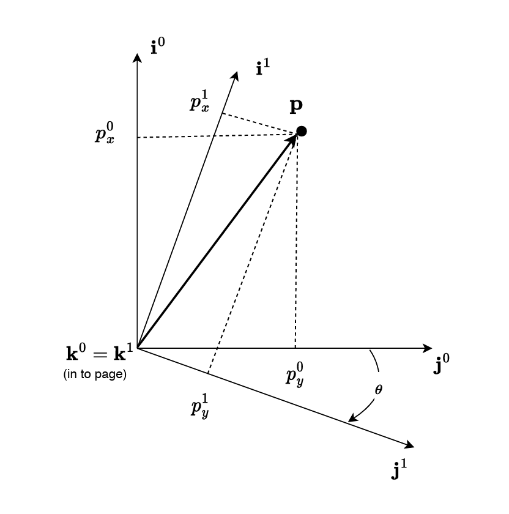

Source: Hummingbird Manual, Chapter 2


\(F_0\) frame → \(\vec p = p_x^0\hat\imath^0 + p_y^0\hat\jmath^0 + p_z^0\hat k^0\), with basis \((\hat\imath^0, \hat\jmath^0, \hat k^0)\)
\(F_1\) frame → \(\vec p = p_x^1\hat\imath^1 + p_y^1\hat\jmath^1 + p_z^1\hat k^1\), with basis \((\hat\imath^1, \hat\jmath^1, \hat k^1)\)
\(\vec p\) is the vector representing rotation. Setting both \(\vec p\) expressions equal describes the rotation between both frames:
$$p_x^1\hat\imath^1 + p_y^1\hat\jmath^1 + p_z^1\hat k^1 = p_x^0\hat\imath^0 + p_y^0\hat\jmath^0 + p_z^0\hat k^0$$Multiplying both sides by \(\hat\imath^0\), \(\hat\jmath^0\), and \(\hat k^0\) gives:
$$ \vec p^{\,0} \triangleq \begin{pmatrix}p_x^0\\p_y^0\\p_z^0\end{pmatrix} = \begin{pmatrix} \hat\imath^0\cdot\hat\imath^1 & \hat\imath^0\cdot\hat\jmath^1 & \hat\imath^0\cdot\hat k^1\\ \hat\jmath^0\cdot\hat\imath^1 & \cdots & \cdots\\ \hat k^0\cdot\hat\imath^1 & \cdots & \hat k^0\cdot\hat k^1 \end{pmatrix} \begin{pmatrix}p_x^1\\p_y^1\\p_z^1\end{pmatrix} $$We can write this as \(\vec p^{\,0} = R_z(\Psi)\vec p^{\,1} = R_1^0(\Psi)\vec p^{\,1}\), where \(R_1^0\) represents the rotation from \(F_0\) to \(F_1\).
$$ R_z(\Psi) \triangleq \begin{pmatrix} \cos\Psi & -\sin\Psi & 0\\ \sin\Psi & \cos\Psi & 0\\ 0 & 0 & 1 \end{pmatrix} $$(where \(\Psi\) is the angle of rotation about the z-axis)
Similarly,
$$ R_y(\Theta) \triangleq \begin{pmatrix} \cos\Theta & 0 & \sin\Theta\\ 0 & 1 & 0\\ -\sin\Theta & 0 & \cos\Theta \end{pmatrix} $$ $$ R_x(\Phi) \triangleq \begin{pmatrix} 1 & 0 & 0\\ 0 & \cos\Phi & -\sin\Phi\\ 0 & \sin\Phi & \cos\Phi \end{pmatrix} $$The \(R_*\) matrices are orthonormal matrices with the following properties:
\(\Psi \to\) yaw angle \(\Theta \to\) pitch angle \(\Phi \to\) roll angle
\(\vec q = \begin{pmatrix}\Phi\\\Theta\\\Psi\end{pmatrix}\) gives us the hummingbird configuration
where \(\vec v_i\), \(\vec\omega_i\), and \(R_i\) are functions of \(\vec q\) and \(\dot{\vec q}\).
$$ K = \sum_{i=1}^{3}\left(\frac{1}{2}m_i\dot{\vec q}^{\,T}V_i^TV_i\dot{\vec q} + \frac{1}{2}\dot{\vec q}^{\,T}W_i^TR_iJ_iR_i^TW_i\dot{\vec q}\right) $$ $$ = \frac{1}{2}\dot{\vec q}^{\,T}\left(\sum_{i=1}^{3}m_iV_i^TV_i + W_i^TR_iJ_iR_i^TW_i\right)\dot{\vec q} $$ $$ \triangleq \frac{1}{2}\dot{\vec q}^{\,T}M(\vec q)\dot{\vec q} $$where
$$ M(\vec q) = \sum_{i=1}^{3}m_iV_i^T(\vec q)V_i(\vec q) + W_i^T(\vec q)R_iJ_iR_i^TW_i(\vec q) $$→ Main goal of this chapter is to derive symbolic expressions for this matrix.
From external source: The mass matrix represents directional inertia, showing that accelerating a system in one direction may feel “heavier” than accelerating it in another.